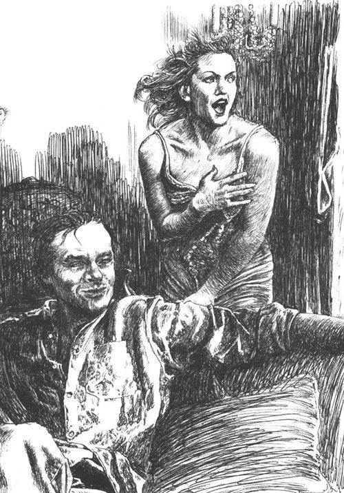
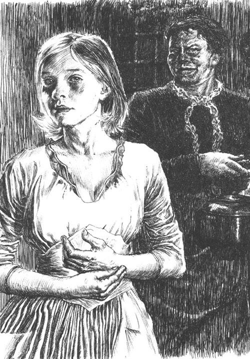

她的教名叫克蕾申琪娅·安娜·阿罗伊西娅·芬根胡贝尔，当时三十九岁，是出生于齐勒河谷小山村里的一个私生子。在她的仆佣身份证“体貌特征”一栏中划了一条斜线，表示没有什么可记录的。但是，如果公务员们有这个必要，必须描述反映她性格的特点，那么只消抬头看她一眼，便一定会在那一栏填写如下内容：像一匹日夜劳作、骨骼粗大、干瘪如柴的山区驮马。这是因为她下唇下垂，略长而又线条粗糙的椭圆形面孔被晒得黑黑的，特别是那蓬乱、浓密、一绺绺沾着垢腻搭在额上的头发……所有这些让人一看就觉得有几分马相。她的步态也透出倔犟，透出阿尔卑斯山里的老爷马那种难以驾驭的驴子般的脾气。这类牲口一年四季总是驮着木头架子，磕磕绊绊、慢慢腾腾地走在多石的山间羊肠小道上，闷气郁结，时而爬坡而上，时而顺谷而下。克蕾申琪娅干完了活，就像卸掉了笼头的马似的，这时她经常松松地合拢关节突出的双手，撑着胳膊，昏头昏脑地在那里发呆，如同养在马厩里的牲口，在休息的时候各种感官都已经闭合上了。她身上的一切都让人感觉生硬、笨拙和沉重。她思想简单，反应迟钝，任何想法的初次形成都像渗过一张难透的筛子，然后缓慢地滴落到她的意识深处。但是一旦她接受了新鲜的事物，就顽强贪婪地死命抓住它。她从来不阅读，既不看报纸，也不翻看祈祷书。书写对她来说是件天大的难事。她写在厨房账本上的那些字母都是歪歪扭扭的，甚至会使人想起她那笨拙的、浑身上下充满棱角的躯体——显然她没有任何明显的女性特征。而且她的声音听起来也像她的肢体、额头、臀部和双手那样粗硬，尽管蒂罗尔山民浑厚的软腭音并不难发，可她说话却老是严重地结巴——其实这也不足为奇，因为克蕾申琪娅从来不对任何人多说一句话，也没有谁曾看见她哪怕笑过一回。在这方面，她也完全和其他的动物一样：那些无意识的上帝的被造物没有被赐予欢畅而自由的表露感情的笑。
作为私生女，她成了全村的负担，就这样慢慢地长大了。十二岁时，她便成了受雇做粗活的女佣，后来当了一间餐厅的清洁工，最后由于她在一家车夫酒馆工作努力，身上散发的一股子韧性和犟劲引起了大伙的注意，被推荐到一个体面的客栈做厨娘。在那里，她每天早上五点钟就起来开始干活，打扫、擦拭、生火、洗涮、拾掇、烹饪、揉面、挤奶……一直干到半夜。她从来不出门度假，除了去教堂，她从来都不上街。圆形灶坑里那团烤人的火对她来说便是世界的太阳，这些年来她劈开的成千上万块木头就是她的树林。
男人们都不理睬她，可能是因为她咬紧牙关操劳了四分之一个世纪，以至于在她身上根本体现不出什么女性的特征；或许是因为她不懂人情世故，不爱说话，见到有人表示亲近，便以粗鲁的态度对待。她惟一的乐趣就是攒钱。出于乡下人和老姑娘那种守财奴的本能，她固执地积攒着，为了避免到了老年无可奈何地住在贫民窟里，吞咽村民施舍的粗食来苟延残喘。
同样也是为了钱，这个女人在三十七岁那年头第一次离开了蒂罗尔山区。一个以介绍职业为生的女中介在消夏时见到了她，看她从早到晚在厨房和餐厅里发疯似的干活，许诺给她双倍的工钱，说服她来到了维也纳。在火车上，克蕾申琪娅除了在吃东西的时候张开过嘴巴，没有对任何人说半句话。虽然同车的旅客和蔼地表示愿意帮她把沉甸甸的装着家当的草编篮子搁到行李网架上去，但她却仍然把它抱着，放在已经压得生疼的膝盖上，原因是在她那大而空荡的山区村民的脑袋里，诈骗与盗窃这些坏事是同大都市这一概念紧密联系在一起的。她到维也纳后最开始的几天，必须得有人陪着她才去市场，因为她害怕那些车，就像母牛怕汽车一样。可是等到她认得了去市场的那四条马路，就不再需要任何人的陪伴。她一个人挎着篮子，低头慢慢地从家门口走到菜摊前，之后又回到家里，打扫、生火，像在之前那个灶头前一样拾掇，并没有任何的变化。到了晚上九点钟，和在山村里的这个时候一样，她便上床睡觉了，张着嘴巴，睡得像一头野兽，直到第二天早晨闹钟叮当响起来才醒。她从不接近任何人，所以谁都不知道她是否已经适应了新环境，或许她自己都不知道自己的感觉。如果吩咐她去做什么，她也只是闷声闷气地回答：“哦，哦。”要是她没有什么其他想法，就会把肩膀拱起来。那些开朗活泼的女佣冲她投去的嘲讽目光，她都置若罔闻，就像是水珠落到兽皮上，一滑而过而已。只有一次，一个女工挖苦地模仿她的蒂罗尔口音，对这个平时不怎么开口说话的人不停地挪揄，这时她猛地从灶台里抽出一根烧着的木柴，朝那个被吓得大叫的女仆扔去。从那一次起，大家都躲着这个会突然怒不可遏的女人，谁也不敢再讽刺她了。
但在每个星期天早上，克蕾申琪娅总会穿上带着细褶又很蓬松的裙子，戴起土气的盘形女帽去教堂。只有一次，就在她到达维也纳后头一回出门的那天，她曾打算随处逛逛。可是她不想搭乘电车，于是便小心谨慎地沿着身旁震颤不已、乱哄哄的马路溜达，眼睛一直盯着石头墙壁，只走到多瑙河边就回来了。在那儿，她目不转睛地看着河里的流水，有种似曾相识的感觉，然后转身依旧沿着石头墙壁，胆怯地避开行车道，脚步沉重地沿着原路返回。这是她第一次，也是仅有的一次出门，为的是了解一下情况。但是看来这一趟肯定是让她失望了。从此以后，她每逢星期天就再也不外出，宁可做些针线活，或者在窗边发呆似的坐着。她过的是犹如脚踏水车一样单调刻板的日子，大城市的生活并未给她原来的生活状态带来一丝波澜。除了到月底，她伸出双手接过来的不再是以前那样两张，而是四张的蓝票子。这是一双历经风雨侵蚀的手，老是要伸进锅里，已经操劳得不成样子，还经常擦出小伤痕。她每次都要怀疑似的把这些钞票验看好久，不嫌麻烦地摊开这些纸币，简直可以说是深情地把它们都抚平，然后将刚得的票子连同原来的那些一起放进黄色雕花小木箱里。这个箱子是她从村子里带过来的，而这只笨重、做工粗糙的小箱子囊括了她活着的全部秘密和意义。夜里她把钥匙放在枕头下面，白天藏在哪里全家人谁也不知道。
这便是这个怪物的习惯（无论别人管她叫什么，人类的正常秉性还是会在她麻木不仁、懵懂无知的举手投足间有些许显露，因为她毕竟还是个人类）。然而，或许造物主恰恰创造了这样的产物，她才能够像蒙着眼罩一样视而不见、心无旁骛地忍受得了在年轻的封·弗男爵这个反常至极的人家当女佣。一般说来，这家的仆役们在受雇和解约的法定限期一到，便再也不愿在这个动不动就吵架的环境里继续呆下去了。女主人经常愤怒得大吼大叫，甚至有些歇斯底里症了。她是埃森一个有钱的工厂主的女儿，已经不再年轻，在某个疗养地结识了这个比她年纪小得多的男爵，便草率地嫁给了这个仪表堂堂、无处不显示出贵族世家魅力的纨绔子弟。可是蜜月期刚过，新娘子就不得不承认当初父母的反对是有道理的：他们反对匆匆忙忙地结婚，特别注重女婿的真心实意和才干能力。这个很快就显示出懒散性格的丈夫，除了隐瞒了结婚前的多笔债务，不久又暴露出单身时养成的浪荡习惯，而不是结婚后应尽的本分。这个心地不算坏的小白脸献殷勤的水平很不一般，像所有草率行事的人那样，从内心深处看甚至随和可亲。但他对待世事满不在乎，百无禁忌，不屑于拿钱作本赚利息，反而把这视作出身微贱者生性小气的狭隘行为。女人却想要踏踏实实、循规蹈矩地过日子，这是莱茵地区市民特有的持家之道。可是这使他感到无法忍受，因为男人要的是逍遥自在。尽管她很有钱，但是对他的每一笔数额较大的开销却总是穷根究底，这位精打细算的夫人甚至拒绝修建赛马场，而这是他一直以来最想实现的目标。所以到了这个地步，他觉得再没有必要为这个粗脖子、大块头的北德老女人尽到做丈夫的责任了。她颐指气使地大声嚷嚷，实在叫他听不下去。于是就像人们常说的那样，他把女人晾在那儿，虽未恼羞成怒，但还是毫不留情地拒斥了这个感到沮丧的女人。每当她对他大加指责时，他就好像无比尊敬似的洗耳恭听，可是等到她训斥完毕以后，他便借吸烟时的吞云吐雾，把她那些情绪激动的告诫远远抛在脑后，随后还是无拘无束地随心所欲。妻子对这种圆滑、类似公事公办的表面应付感到伤心，比遇到任何形式的反抗都更加感到怨气难消。可是面对这种看似有教养、从不发火、但却伤透人心的谦恭姿态，她郁结的愤恨只能转而往另外一个方向发泄——她大声斥骂仆人，疯狂地向无辜者发泄她原本有理、然而迁怒不当的怨恨。因而不可避免地产生这样的后果：两年之中，她不得不更换女佣至少十六次，有一回甚至还打了一架，花大钱赔偿才得以了结。
只有克蕾申琪娅依旧木然不动，犹如大雨中站在出租车前面的一匹马，尽管身后已经闹得天翻地覆。她不站在任何一边，也不理会发生了什么变化。她似乎没有注意到，那些来到她的身边、和她共居的陌生女仆不断地变换着名字、头发颜色、身体气味和举止特点。她不同任何人说话，也不去管撞得乒乓乱响的房门、经常中断的午饭、无可奈何而又举止失常的暴怒。她冷漠地从厨房走到市场，又从市场回到厨房，奔忙不已。她对这个隔绝在自身圈子以外的世界发生的事情无动于衷，好像一切都没发生似的，就像连枷无情地拍打谷物那样，她把一天又一天摔得七零八碎。就这样，大都市里的两年时光在她身边流逝，并没有留下任何痕迹，她心中的那块弹丸之地也未得到扩展。只有一点例外：小箱子里的蓝色钞票堆叠起来已有一掌之高。到年终，她用沾湿的手指一张一张地清点，发现距离积满一千这个具有神奇魔力数字的日子，已经不再遥远了。
然而，偶然的事情总会发生，就像金刚石钻头无坚不摧一样。命运让人看不透、想不到，它诡计多端，总是从完全意想不到的地方趁虚而入，如同砸开铁石似的，彻底震撼最愚钝的心灵。在克蕾申琪娅身上，此事的外在因素几乎就像她本身那样平淡无奇：当政人物心血来潮，在中断了十年之后，又要进行一次人口普查，向各户分发了非常复杂的表格，要求详尽地填报各人的履历。男爵信不过下人的书写能力，这些人只能画出不成样子、仅仅从读音看才算正确的字母。他宁可亲自逐栏填写。为此他把克蕾申琪娅叫进房间。他问清了她的姓名、年龄、出生地之后，发现他曾经在阿尔卑斯山中她所在的偏僻角落多次打过羚羊，因为他是一名狩猎迷，并且和当地猎区业主是朋友。此外一名陪了他两个星期之久的向导刚好和她同村。而更不可思议的是，这个向导原来凑巧还是克蕾申琪娅的一位长辈。更让男爵一时高兴的是，竟从这个偶然的机缘引出一次不能算短的谈话，而他们从中又得知了一件意想不到的事：就在她曾当厨娘的那间客栈里，男爵曾吃过齿颊留香的烤鹿肉——这些其实全是鸡毛蒜皮的小事，但是由于种种巧合而变得异乎寻常。而对克蕾申琪娅来说，在这里第一次见到对她的家乡有点儿了解的人，简直是一个奇迹。她红着脸站在他的面前，露出感兴趣的神情。男爵竟开起玩笑来，像个男孩子那样胡闹，模仿蒂罗尔的口音，追根究底地问她会不会唱当地的颤调，还提出很多诸如此类的问题。这期间，她一直笨拙地、讨好地躬着身子。最后，男爵把自己逗乐了，学着山民的样子，非常随便地在她粗硬的臀部上拍了一下，哈哈大笑，把她打发走了：“现在你回去吧，好申琪娅！看在你是齐勒谷人的份儿上，再多给你两克朗。”
的确，这本身并非是什么充满激情、意味深长的举动，但是这次五分钟的谈话对这个浑浑噩噩的人潜藏的情感所产生的影响，就像是在湖中投下一块石头惊到了鱼一样，先是逐渐地、缓慢地形成一个个晃动的水圈，然后厚重地一波一波扩展开，慢慢地漾到意识的边缘。这个固执又沉默寡言的女人多年来第一次算是真正同一个人亲切交谈。这第一个对她说话的人就在这里，冷酷地置身于纷扰之中，竟然知道她家乡的丛山，甚至吃过一回她做的烤鹿肉！想想看，这实在是异常难得的缘分。而且他还不拘礼俗地在她的臀部上拍了一下，这个举动在山民的语言里，当然意味着直接地向女人示好和求爱。纵使克蕾申琪娅不敢胡思乱想，知道这位风流倜傥的男主人不可能是中意于她，然而不知怎地，那肌肤的亲昵还是唤醒了她昏然慵困的内心情感。
就这样，通过这次偶然的谈话，堆在她内心的泥土便开始一层一层地扒出和挪开，先是模模糊糊地，然后越来越清晰地显露出前所未有的情感。如同一条狗，在周围所有的两条腿的人类当中，忽然有一天蓦地辨出其中一位就是自己认定为主人的那一个。从这一刻起，它便乐意跟他东跑西颠，摇着尾巴或者以叫唤来迎接这个命里注定主宰它的人，心甘情愿地对他百依百顺，温顺地跟随他的每个脚步。同样，在克蕾申琪娅闭塞的圈子里，在以钱币、市场、锅炉、教堂、床铺这五个惯用的概念筑成的不留缝隙的圈子里，现在突然闯入一个人，他需要活动空间，于是肆意地把原来的成员全都推到一边。出于一旦抓住什么便永不放手的山民的占有欲，她将这个新来者拽到心灵深处，一直拉进她那麻木的感官产生本能冲动的混沌世界里。当然，这种变化过了一段时间方才显示出来，最初的那些迹象也极不起眼。譬如说，她给男爵洗衣服、擦鞋子时特别细心，到了入迷的程度，而男爵夫人的衣服鞋子，她却让打扫房间的女仆去管。另外，人们可以经常在过道和屋子里见到克蕾申琪娅。一听见钥匙在外面那道门上哗啦响，她便马上迎过去，以便接过男主人的大衣和手杖。她现在对膳食加倍注意，甚至不怕麻烦地一边走一边打听去市场大厅的那条陌生的路，买来一份烤鹿肉。此外可以看出她对衣着也比以往要在意。
情窦初开的感情过了一两个星期才从她的内心长出最初的几棵嫩芽。又过了好几个星期，第二种情感才跟随这最早的激情产生出来。它在变动不息中成长，显露出清晰可辨的色彩和形态。这第二种情感正是第一种的增补——这起先模糊不清、但逐渐不加掩饰地赤裸裸地迸发出来的对男爵夫人的仇恨，仇恨这个女人可以同他一起居住、就寝、说话，然而对他却并不是像自己那样忘我地尊敬。不管是因为她——她现在不知不觉地留意了——目睹过不止一次出现的丢人场面，因看到自己崇拜的男主人遭到愤怒的女主人侮辱而感到憎恶，还是因为他的举止和蔼可亲，两者相比之下，使她对这个带有北德特点的苛刻女人那副高傲的冷脸更有了双倍的厌恶——总之，她对不明究竟的男爵夫人忽然采取一种执拗的态度，怀有一种折磨对方、用无数使人反感的恶毒的细节来报复她的敌意。譬如，夫人至少得按两次铃，克蕾申琪娅才故意拖拉、慢吞吞地来应门，明显流露出不耐烦的样子。她那高高拱起的肩膀从一开始就摆出一副抵抗的架势。她一言不发，一脸愠色地接受安排和交代，弄得夫人不知道她到底听明白了没有。可是如果为了保险起见，男爵夫人再问她一次，那么得到的回答只是她气恼的点头，或者一句不屑的“早就听见了！”。又比如，夫人看戏回来发现有一把重要的钥匙不翼而飞，急得在各个房间乱跑，谁知半个钟头以后，她竟然就在某一个角落里找着了它。克蕾申琪娅求之不得的是：经常把应该转告夫人的事情或者别人打给夫人的电话给忘了。如果向她追问起来，她便生硬地直接回夫人一句“我忘了”，丝毫没有抱歉的意思。克蕾申琪娅从不正眼看她，也许是怕双眼忍不住流露出对她的仇恨。
家事的烦扰导致夫妇之间的不和愈演愈烈。或许克蕾申琪娅本能地惹人厌烦的表情对病象一周比一周明显的夫人也有影响，致使她经常性地吵闹不休。由于独身在家太久，夫人因受折磨而变得喜怒无常，再加上婚后丈夫的冷漠和下人的放肆而怨恨郁结，这位有苦难言的男爵夫人越来越失去心理平衡。含镇定剂和安眠药成分的药物也不能抑制她的大吵大闹。服药以后，在与人争辩的时候，她那绷得过紧的神经就会突然失去控制，脾气更大了。她甚至出现了痉挛和癔病的症状。可是谁都不给予她一丝一毫的同情，甚至连假装的善良帮助也没有。最后，那位请来的医生建议她去疗养院呆两个月。听到这个意见，平时对她极其冷漠的丈夫突然表示关切和赞同，使得妻子又起了疑心。起初她不肯去疗养，然而，这次出门的事最后还是定下来了。男爵指派所有的年轻女仆们都陪她去，只有克蕾申琪娅被留在这偌大的住宅里服侍他。
这个要把老爷交给她一个人伺候的消息，对克蕾申琪娅那颗沉重的心产生的作用宛如一剂猛然提神的妙药，仿佛有人将她所有的体液和活力装在一只魔瓶里剧烈地摇动那样，把它们混合在一起了，于是从本性的底层浮起的潜藏着的积淀的热情，濡染了她的整个举止神态。从前呆滞、僵硬的手脚显露出来的麻木和迟钝一扫而光，好像这个振奋人心的消息忽然给她换上了灵活的关节和敏捷轻盈的步伐似的。她里里外外上上下下地来回跑。一听说要作好出门的准备，她便主动收拾箱子，还亲手把它们搬到车上去。那天夜里男爵很晚才从火车站回来，这个殷勤的急步迎上前来的女仆马上接过了他的手杖和大衣。男主人舒了一口气说：“顺利打发走了！”这时候却发生了一件怪事：平时，克蕾申琪娅像所有的动物一样，脸上从未浮现过一丝笑容。此刻，她那紧闭着的双唇四周的皮肉好像在用力地牵扯和伸张。她嘴角歪斜，横向拉开，突然让那呆头呆脑的脸孔变得喜形于色，还泛出龇着牙的笑意，毫无掩饰，像兽类一样没有丝毫顾忌。男爵见到她这副模样，觉得意外而难堪，因自己亲昵失当而感到羞惭，无言地走进了自己的屋子。
然而，短暂的尴尬迅速过去了。在随后的几天里，主仆二人感受到一致的舒坦、称心如意的清静和解脱。男爵夫人的离去仿佛吹散了满天密布的乌云：挣脱了羁绊的丈夫，有幸逃离了无休无止的辩解，第一天夜里就很晚才回家。克蕾申琪娅默默地殷勤伺候，与夫人接待他时的喋喋不休、问这问那形成鲜明对比，这使他感到很舒畅。而克蕾申琪娅则把她亢奋的激情专注于每日该做的事情上。她早早起床，把什么都擦得锃亮。她着了迷似的擦拭门把手，不知怎么竟能做出特别可口的菜肴，这出乎男爵意料。他注意到第一次进午餐时，她为他一个人挑了贵重的餐具，它们以往只在特别的场合才从银器橱里取出来使用的。男爵平时不太在意这些。不仅如此，他居然还觉察到这个怪人那简直是体贴入微的关切之心。他生性和善，也就明了地表示了对她的满意。他称赞她会做菜，对这对那都夸她几句。第二天是他的命名日，早上她做了一个制作精巧的圆形大蛋糕，上面有他名字的大写花体首字母和撒糖的纹章图案。他看了以后忘乎所以地对她笑道：“申琪娅，你早晚会惯坏了我！我的夫人可千万别回来！要是她回来，那我怎么办？”
对自己多少约束了几天后，男爵变得越发肆无忌惮。他根据多种迹象，肯定她会守口如瓶，于是便在自己的住宅里又过起了十足单身汉般毫无拘束的生活。作为妻子暂离的丈夫，他在第四天把克蕾申琪娅叫进房间，用非常沉着的语调吩咐她晚上准备两份冷夜宵，然后她就去休息，其他一切由他自己料理，并未再讲为什么要这样做。克蕾申琪娅默不作声地接受了这个安排。没有一瞥目光、没有一丝眼色微微透露出，这几句话的深层含意是否渗进了她那低矮的额角后面。但是很快她的男主人就注意到，她对他的真正意图领会得多么透彻，因而感到意外而又有趣。深夜，他在看完演出后带着一个娇小的歌剧院女演员回到家中，不但发现餐桌上的夜宵准备得非常精致，而且餐桌还被鲜花装点了。他还看到在卧室里挨着他自己的那张床又铺了一张床，大胆一而诱人，连他夫人的丝质睡衣和拖鞋也已放好在那里，等候有人去穿。这位不再受到管束的丈夫对这个怪人的深切关注觉得很好笑。由于她知情而且从旁协助，男爵已不再有丝毫拘束了，早上他就摇铃让她去伺候这位造访者梳洗。这样，主仆二人之间的默契完全确立了。
在那几天里，克蕾申琪娅又有了一个新的名字。那个活泼的女演员正在记《唐璜》中埃尔维拉女士这一角色的台词。她喜欢开玩笑地把多情的男朋友抬举为唐璜。有一回她笑着说：“把你的勒波雷拉叫进来！”这个名字被用到这位壮实的蒂罗尔女仆身上，实在是风马牛不相及，正因为这样，男爵觉得很滑稽。从此以后，他都叫她勒波雷拉了。克蕾申琪娅乍一听，睁大了眼睛发呆，但马上便因这个她弄不明白的、如此响亮悦耳的名字而被吸引，竟然把享受改名的待遇视作地位的提升。每当得意忘形的主人这样召唤她的时候，她就大大地张开两片鼻翼，露出茶色的马一样的牙齿，恭顺地、摇着尾巴似的靠过来，以便听命仁慈的主子对她的吩咐。
取这个外号的本意是作弄人，但这位未来的歌剧明星碰巧给这个怪人披上了一件极其恰当的语言外衣：与德蓬特笔下那个欢娱与共的同伙相似，这个情缘难觅、四肢僵化的老处女从男主人的风流韵事中感受到愉悦。无论是每天早上发现遭到所有人仇恨的男爵夫人的绣床不是让这个，就是让那个具有青春活力、蒙受屈辱又十分痛快的身体弄得乱七八糟，还是悄然在自己的诸般感官中喷发出共享欢乐的火花——不管怎样，这个过分虔诚而又冷酷的老姑娘显出一副简直是激情亢奋的热心肠，对她男主人的一切离谱行为和指示惟命是从。由于长期的操劳过度和几十年来的含辛茹苦，她的身体早已变得毫无女性特征，也失去了内在的冲动，但她带着诱使苟合的兴致，眯起眼睛目送几天以后已是第二个、很快又是第三个女人进入主人的卧房，并从中获得温暖而舒畅的快感。逐渐苏醒的意识和情爱气氛的勾魂摄魄，对她的睡意未消的官能，像清洗液一样产生了作用。克蕾申琪娅成了真正的勒波雷拉。她逐渐变得机灵敏捷，应声即到，精神抖擞，如同那个活跃的男仆勒波雷拉。在不断积聚的急切关注中，她的性格显露出似热气喷射上来的反常现象：种种微不足道的欺诈行为、狡黠的举动、吹毛求疵的做法，以及偷听、探问、窥伺、四处走动之类的事情。她贴在门边窃听，从钥匙孔中偷看，在屋子里或床铺上胡乱翻找。她像捕食似的，一闻到猎物的气味，便为莫名的激奋所驱使，沿着楼梯跑上跑下。这种警觉，这种伴有好奇心理的关切，使她从过去麻木愚钝、毫无生气的外壳逐渐衍化成可以说是活生生的人。邻居们都感到惊讶，克蕾申琪娅一下子变得喜欢与人交往，跟女仆们闲聊，笨拙地和邮差开玩笑，同那些女店员议论旁人……而且一天晚上院子里熄灯以后，住在她屋子对面的几个女佣听到从那个平时一直没有声息的窗子里响起了奇怪的嗡嗡声——原来是克蕾申琪娅正在生硬地用压低的嘶哑的嗓音，唱一支阿尔卑斯山区傍晚时分牧女在草地上唱的歌。支离破碎的音调经过久置不用的双唇而走了音，从屋子里艰难而不顺畅地传出毫无抑扬顿挫的调子。但无论怎样，这调子听起来还是有些不可思议地感人和奇特。从童年到现在，克蕾申琪娅第一次开口歌唱。逝去的岁月留下一片幽暗，艰涩的歌声却带着光明慢慢升起，不知怎地竟能打动听者的心。

“把你的勒波雷拉叫进来！
在这个崇拜男主人的女仆身上发生的这一系列令人惊奇的变化，原是男爵无意间造成的，对此他本人却极少觉察。有谁会回头去看自己的影子呢？人们感觉到它有时忠实而沉默地尾随着自己的脚步，有时急匆匆地在身前滑行，像一个还没有意识到的愿望。但是人们很少会花力气去细看这相似而稍微走样的影子，认出那扭曲的图像竟是自己本人！男爵在克蕾申琪娅身上仅仅注意到，她时刻准备着服侍他，难得开口而牢靠，忠心耿耿到了忘我的程度。而正因为她沉默寡言，在所有敏感场合都很有分寸，所以使他觉得特别满意。有时他随便地像抚弄一条狗似的给她戴戴高帽，偶尔也对她开开玩笑，豁达大度地掐一下她的耳垂，给她一张钞票或戏票——这些对他来说都是漫不经心从背心小口袋里掏出来的零碎玩意儿，可在她看来却全是圣物。她总怀着肃然起敬的心情，把这些东西都收藏到她的宝贝小木箱里。慢慢地，他不再躲避她，心里想什么就直接说出来，甚至把一些复杂的事情也交给她去办理——他愈表现出信得过她，她就愈显得知恩图报，用心按照他的意愿去行事。一种以奇特的方式嗅闻、搜寻、追踪的本能逐渐显示出来，她像打猎一样跟随、窥探他的每一个意愿。她的生命、追求还有意志仿佛全从自己的躯体转移到他的身上。她站在他的角度来观察一切，代替他的感官来倾听一切，在近乎放荡的热情的推动下，她分享着所有他得到的乐趣和欢心。每逢新来的女郎踏进门槛，她便笑容满面。要是他夜晚归来时身边没有娇柔的女伴，她就会露出怅然若失、由于期待未果而感到委屈的神情——她过去那么昏聩的头脑现在却灵活而迅速地运转。她的眼睛里闪耀着前所未有的机灵警觉的光芒，像是人性从这头劳累过度、疲惫不堪的干活牲口身上苏醒过来了——一个阴郁而深沉、狡猾而危险、沉思而专注、好动而诡诈的人苏醒了。
有一次，男爵回家比较早，他惊讶地在过道里站住了。从这个平时总是默不作声的女仆的厨房门后面，竟传来一阵阵奇怪的吃吃的笑声。这时，勒波雷拉已经闪身走出这扇半开的门，尴尬地在围裙上擦着双手，显得害怕而又窘迫。“请您原谅我，老爷，”她说道，目光在地板上扫来扫去，“是糕点师傅的女儿在这儿……这女孩很漂亮……她很想认识老爷您。”男爵觉得十分意外，抬起了目光，既对她这种放肆的亲昵感到恼火，又对她这种拉纤似的殷勤感到好笑，一时不知如何是好。最后，男性的好奇心占了上风，他说：“带她来让我看看。”
勒波雷拉用甜言蜜语，慢慢地把姑娘哄到身边。这个模样俊俏、头发金黄的十六岁女孩涨红了脸，腼腆地笑着，被女仆急切地往前推着。她从门里走了出来，笨拙地转身避开同这个潇洒的男人打照面。事实上她从对面铺子里时常带着近乎天真的钦佩心情注视他。男爵看她长得俏丽，建议她到屋子里一起喝茶。这姑娘拿不定主意该不该去，朝克蕾申琪娅转过身子，可是她早已急匆匆地回了厨房。这个被诱上钩的女孩只好红着脸，好奇而激动地接受了这危险的邀请。
然而，事情还是没有什么本质的飞跃。虽然在紊乱、失常的激情的驱动下，这个生硬、迟钝的人，心里多少产生出某种精神活力，但是克蕾申琪娅新近学会的思考方式视野狭窄，还是未能超越最为直接的因由，在这一点上依然与动物只顾眼前事物的本能相似。她像狗一样喜爱主人，无微不至地伺候他。克蕾申琪娅沉浸于这种狂热之中，完全忘掉了不在家里的男爵夫人。因此，她的醒悟也更加可怕。一天早上，男爵手里捏着一封信，暴躁而气恼地走进屋子。他让她把家里的一切都收拾好，夫人明天就要从疗养院回来了。这时，克蕾申琪娅犹如挨了当头棒喝似的，脸色惨白，吃惊地张着嘴巴站在那儿。这个消息宛如一把利刃刺进她的心脏。她呆呆地望着，只是呆呆地望着，仿佛没有听懂。这晴天霹雳将她的脸孔炸得不成样子。这是如此可怕，连男爵也觉得必须说一句轻松的话来宽慰她：“我看，你也不高兴，申琪娅。不过，这也是没有办法的事。”
那张僵化得如同石板的面孔马上又微微颤动起来。从体内深处，仿佛从内脏里面，慢慢升上来一阵剧烈的痉挛，逐渐使刚才还是煞白的脸颊泛出了暗红色。某种东西非常缓慢地、随着沉重的脉搏被抽离出来。由于她使劲地想把它忍住，因而使得喉头抖动不已。它终于升到了上面，低沉地从咬得格格作响的牙齿缝中迸出来：“总……总……会……总会有办法的。”这句话冷酷地冲口而出，犹如一颗致命的子弹。在激烈地发泄以后，她那扭曲的脸孔好像被压扁了似的，显出非常恶毒、阴沉的神情，使男爵不禁吃了一惊，诧异地往后退缩。但克蕾申琪娅马上又转过身去，开始拼命地使劲刷洗铜盆铁罐，简直像要把手指磨得粉碎一样。
随着男爵夫人的归来，整座宅院再一次被风暴侵袭了。一扇扇房门被摔得乒乓作响，吵闹像穿堂风一样穿过一间间房子，吹散了家里原本欢乐安逸的气氛。也许是因为这个女人听到邻居搬嘴弄舌或收到匿名信，得知了丈夫居然明目张胆地带外遇回家，得知自己的男人如此卑劣地滥用了住宅不容侵犯的权利，也许是因为他迎接她的时候那种紧张的神色。他毫不掩饰的厌烦表情使她感到恼火——总之在疗养院里呆的两个月，对她快要崩坏的神经没有什么帮助。她不时痉挛发作，抑或进行威胁和大吵大闹。他们彼此之间的关系日渐恶化。一连几个星期，男爵都是一派男子汉气概，以他至今奏效的方式对付她一次又一次的责骂。每当她以离婚或给她父母写信相威胁时，他便顾左右而言他，拿空话敷衍她。然而，正是这种无情而沉着的冷漠，使这个郁郁寡欢、被敌意所包围的女人越来越深地陷入烦躁易怒的情绪之中。

勒波雷拉用甜言蜜语，慢慢地把姑娘哄到身边。
克蕾申琪娅从此便以往日的沉默把自己完全掩蔽起来。然而，现在这种沉默已变得咄咄逼人而居心叵测。当女主人抵达家门时，她执拗地留在厨房里，最后被喊了出来，但还是避而不向回来的夫人问好。她倔强地拱起肩膀，木然地站在那里，不管问她什么，她回答起来总是没有好气，使不耐烦的女主人很快就转身不理睬她。但这时克蕾申琪娅却朝不明真相的夫人投去仅有的一瞥，好像要将积聚的全部仇恨注入她的后背。夫人回到家里，使她觉得被掏走了全部的占有感，毁坏了她之前纵情享受过的奴仆地位带给她的乐趣。她现在必须又退到厨房里面的锅灶旁边，听来亲切的勒波雷拉这个名字也被剥夺，这是因为男爵要谨慎地避免在夫人面前对克蕾申琪娅表示好感。但有时男爵被令人厌恶的争吵弄得疲惫不堪，或者需要得到一点儿安慰、发泄一下怒气的时候，便溜进厨房来找她。他坐到一张小板凳上，只是叹一口气，说：“我真受不了啦！”
她所崇敬的男主人由于心情太激动而躲避到她这里来，这样的时刻带给勒波雷拉极度的幸福。她从来不敢出声回答或安慰，只是默默地坐在那里沉思，偶尔痛苦地朝备受折磨的神明投以同情怜悯的目光，露出谛听的神情。这种无言的关切使他感到欣慰。可是每次他离开厨房后，那暴怒时出现的皱纹又立刻向上延伸到她的额头。她那粗重的双手捶击听任宰割的肉块，仿佛要把激愤敲打进去似的；或者奋力擦拭杯盏刀叉，好像要把愤怒搓得粉碎。
某一天，夫人归来造成的阴云密布的僵持局面终于暴雨骤至般爆发了。一次又一次发生让人受不了的吵闹，这回男爵终于忍无可忍，抛开小学生那样低声下气的无所谓的态度，猛然跳了起来，随手把门哐啷一声关上。“现在我可厌烦透了！”他狂怒地喊叫，以至每一个房间的窗子都被震得格格作响。他带着满腔怒火，脸孔通红地冲出去，奔进厨房，对像紧绷在弓上的弦一样颤抖的克蕾申琪娅说：“马上给我收拾提箱和猎枪，我要去打猎，去一个星期。在这个地狱里，就是魔鬼也受不了。非得做个了结不可！”
克蕾申琪娅兴奋地注视他——他又有了主人的气概！于是一阵沙哑的笑声从她的喉头咕噜咕噜传上来。她说：“老爷您可说对啦，非得做个了结不可。”她情绪激昂，打着哆嗦，从一个房间奔到另外一个房间，飞快地从柜子和桌子上找齐各样物件拾掇好。这个粗鲁的人的每一根神经都因紧张、心急而震颤。她亲手把提箱和猎枪拿下去放在车子里，可是当男爵想找一句话对她这样的热心道谢时，他却吃了一惊，连忙收回了目光。因为这时她那双唇紧闭的嘴角突然浮现出诡异的笑意，这副模样曾一再使他感到惊骇。他不由得联想起收拢利爪、蓄势出击的野兽。但是克蕾申琪娅马上又弯下身子，用嘶哑的声音，带着可以说不分尊卑的亲近口气低声说道：“老爷您尽管走好了，这里的事全交给我了。”
三天以后，一封加急电报把男爵从猎区召回。他的一个同辈亲戚在火车站接他。男爵心神不安，一眼就看出一定是发生了什么严重的事，因为这位亲戚的眼神中流露出紧张的慌乱。对方说了几句作为铺垫，免得他一下子受不了，然后告诉他，早上发现他的夫人已经死在床上，整间屋子弥漫着煤气。亲戚说，遗憾的是，这不可能是偶然不小心造成的意外事件，因为现在已是五月，早就不用煤气炉了。这位轻生的夫人头天晚上服用了安眠药，从这一点可以看出她的自杀意图。此外，还有厨娘克蕾申琪娅的证词，说那天晚上只有她一个人留在家宅里，曾经听见轻生的女主人在夜里还走到前厅去，看来是有意打开已经关严实的储气罐。根据这一陈述，请来的法医也排除了任何偶发事件，把这件事作为自杀记录在案。
男爵开始浑身发抖，在他的亲戚谈到克蕾申琪娅的证言时，他突然觉得两手的血液骤然变凉，一个令人难受、反感的思绪像呕吐的感觉一样向他的心头涌起。但他竭力把这种正在形成的、令人痛苦的感觉压抑下去，由他那位亲戚带他进了屋子。尸体已经搬走。在客厅里，他的亲戚们正在等候他，露出忧郁而怀有敌意的神情：他们的慰问听起来像一把把冷冰冰的刀，带着多少有些加重的责难口气。他们说，他们不能不告诉他，很不幸，这件“丑闻”已无法遮掩，因为那个女仆一早就冲出去，跑到露天台阶上尖声大叫：“夫人自杀啦！”他们还说，由于纷纷议论——锋利的舆论又一次冷酷地对着他——令人难堪地引发了公众的好奇心理，他们只得安排好，不声不响地安葬她。男爵怅然若失、心乱如麻地听着，在这当中有一次不由自主地朝那扇上了锁、通向卧室的房门看去，接着又胆怯地垂下目光。那说不清的思绪在他的心里翻腾不已，使他感到痛苦。他要把它想个透彻，可是那些恶意的空话干扰了他。亲戚们发着牢骚，喋喋不休，围在他身边又说了半个钟头，然后才一个一个地离开。男爵独自留在这间半明半暗的空屋子里，像受了沉重的打击一样在颤抖。他感到额头涨痛，关节乏力。
这时候有人在敲门。“进来！”他吓了一跳，说道。紧接着从他身后传来迟疑的脚步声，一种生硬的、蹑手蹑脚的、趿拉着鞋子的啪嗒作响的脚步声。他太熟悉这脚步声了。蓦地，他感到一阵恐惧，觉得颈椎好像被螺钉给固定住了一样。同时一阵寒战从两鬓的皮肤往下一直传到膝盖。他想转过身去，可是肌肉不听使唤。就这样，他站在屋子中央，浑身颤抖，叫不出声音，垂落的两只手僵直如石头。但同时他清楚地意识到，这样内疚地站着看起来是多么懦弱。然而，再怎么用力也是徒劳，肌肉已经不受他控制了。这时，他身后传来非常沉着、丝毫没有感情的声音，以完全就事论事的平常语气问他：“我只想问一声，老爷您在家里还是在外面用餐？”男爵颤抖得越来越厉害。现在那种冰冷的感觉已经透进了胸腔往下渗。他张了三次嘴都说不出话，最后总算说了一句：“不吃，我现在什么也不吃。”接着，那脚步声啪嗒啪嗒地出去了。他不敢回过身去。突然，僵硬的感觉消失了：接着是一阵恶心，也许是一阵痉挛，袭击了全身。他猛地一跳，到了门边，哆嗦着把钥匙转了一下，免得那脚步声，那像幽灵一样跟随他、令人憎恶的脚步声再一次来到他的身边。然后他往椅子上一靠，希望把一个不愿意去思忖的想法硬压下去，但它却像蜗牛一样冷冰冰、粘糊糊地从心底冒上来。而且这个老要冒上来捕捉他又令他恶心的想法，简直无法摆脱，踌躇不去。令人厌恶的想法浸透了他的整个感觉，在整个不眠之夜始终缠住他的心。在此后的分分秒秒里，甚至于在葬礼上，当他身穿丧服、默然站在灵柩前头的时候，这个想法都在缠着他。
葬礼之后的一天，男爵匆匆离开了这座城市。现在，所有的面孔都叫他太难忍受了。在人们表示关心的同时，他们的眼睛里——是他自己这么想的——都带有引人注目的、观察的或者像审判异教徒一样追根究底的目光。而且，即使是无生命的物件也仿佛以凶狠恶毒的语言在说话。住宅里的，特别是卧室里的每一件家具，一切都似乎还留有令人作呕的煤气味道。每当他不自觉地旋开门上的把手时，那门把手都好像要把他推开似的。而他过去所信赖的女佣那种满在不乎、冷酷无情的冷漠态度，则造成了他在睡梦中和清醒时最难以忍受的心理压力。她在这所空寂的住宅里四处走动，仿佛根本没有发生任何事情一样。自从那位亲戚在火车站提到她的名字的那个瞬间起，每次遇见她，男爵都不寒而栗。只要一听到她的脚步声，一种想要逃命的那种紧张慌乱的感觉便向他袭来。他不能再忍受那种趿拉着鞋子走路的声音，不想再看到显得漠不关心的步态，和那种冷淡、沉默而泰然自若的神情。只要一想到她，一想到她那咯咯吱吱的声音，沾着垢腻的头发，麻木、野蛮、残忍而冷酷的心性，他就要作呕。而在他的愤恨里面也夹杂着对自己的愤恨，恨自己没有力量打碎卡住他咽喉的枷锁，就像硬把绳索拉断那样。因此，他只看到一条出路，就是：出逃。他暗地里收拾行装，没有对她说一句话，只留下一张匆匆写就的字条，说他到克恩滕找几个朋友去了。
男爵整个夏天都呆在外面，有一回，为了处理夫人的遗产，人们催他返回维也纳。他宁可悄悄地回来，住在旅馆里，也不想告诉那个死守在宅子里的报丧鸟般的女仆。克蕾申琪娅并不知道他已回来，因为她从来都不同别人交谈。她无所事事，阴沉得像一只猫头鹰，整天呆坐在厨房里。她不再像以前那样每周去一次教堂，而是去两次。她从男爵的律师手上接下要办的事和要结算的钱，但他本人却杳无音信。他不写信，也不让人传话。就这样，她默不作声地坐在那里一直等待。她的脸孔显得越来越严酷，越来越干瘪，她的动作也变得越来越呆滞。这样等待又等待，她在令人费解的僵化状态中度过了许多个星期。
可是到了秋天，紧急待办的事务不允许男爵再延长度假的时间了。他不能不回自己的家。到了宅院门槛旁边，他犹豫地站住了。同密友们一起过了两个月，好多事情他几乎已经淡忘——可是现在，他又要朝那个恶魔，朝那个可能的共犯径直走去。原来那压抑的、引起恶心的抽搐感觉又回到他身上了。他越来越慢地登上台阶，觉得每上一级，那只无形的手就更接近于他的咽喉。最后，他必须使劲集中所有的意志力，才能迫使僵硬的手指转动钥匙。
克蕾申琪娅一听见锁孔中钥匙转动的声音，便如梦初醒似的从厨房里奔跑出来。她见到男爵的时候，曾脸色发白地呆立了一刻，随即好像要把身子缩成一团似的，弯腰去拿他放下的手提包。但是她忘了说一句迎接他的话，他也没有开口。她默默地把手提包拿到他的屋子里，他默默地跟在她的后面。他不安地朝窗外看去，等待着，直到她离开他的房间。随后，他急促地把房门钥匙转了一下。
隔了几个月以后，她第一次迎接他的情形就是这样的。
克蕾申琪娅在等待。同样，男爵也在等待，看看见到她时那种痉挛般的极度恐惧感会不会消退。但是情况没有任何好转。在他看到她之前，只要一听见从外面过道上传来她的脚步声，这种不快的感觉便战栗着从他心里升上来。他不吃早餐，每天清晨不对她说一句话便匆匆离开家，在外面一直呆到深夜，只是为了避免见到她。那不多的几件非找她办不可的事，他也侧着身子吩咐她。与这个幽灵一起呼吸同一所房子里的空气，使他感到喉咙好像一直被掐着一样。
在这期间，克蕾申琪娅整天默默无言地坐在板凳上。她不再为自己煮饭烧菜。对任何食物她都感到厌恶。她避开了所有人，她只是呆坐着，目光畏怯地等待主人的第一声召唤，犹如一条知道自己闯祸了、将要挨打的狗。她那迟钝的感觉不能确切地体会出这是怎么一回事，她仅仅理解到，她的神明，也就是她的主人，在回避她，不再需要她，只有这个意识沉重地压在她的心头。
男爵归来的第三天，响起了门铃声。一个头发花白、稳重的男人站在门外，脸颊刮得很干净，手里提着一只箱子。克蕾申琪娅想赶走他，可是来人却坚持说，他是新来的男仆，主人叫他十点钟来，请她给通报一下。克蕾申琪娅的面色变得煞白，她一动不动地站了一会儿，张开的手指举着僵在那里。随后，这只手如同被子弹击穿的鸟似的扑腾掉了下来。“您自己进去吧。”粗鲁的回答让这个新来的男人感到惊讶。她朝着厨房转过身去，砰的一声把门关上了。
男仆留下来了。从这天起，主人一句话都不必再对她说了，有什么吩咐都通过这个沉静的老男仆去转告她。家里的事她完全不了解，一切都像波浪漫过石块一样冷冰冰地在她身边流逝。
这种压抑的气氛持续了两个星期，像一场病似的侵蚀着克蕾申琪娅。她的脸孔变得更加尖削，还有了棱角，两鬓的头发一下子都变得灰白了。她的动作完全僵化，几乎总是一声不吭地坐在板凳上，宛如一块木头，空洞的眼神呆呆地盯着冷寂的窗子。可是她一干起活来，便气冲冲的，勃然大怒一般粗暴。
就这样又过去了两个星期。有一次，男仆特地来到主人的房间。男爵看他拘谨地候在一旁，便知道有什么特别的事情要向他禀告。男仆看不起克蕾申琪娅，叫她“蒂罗尔蠢货”。他曾经表示过不满，说她性情怪癖，建议辞退她。然而不知什么原因使男爵感到尴尬，当时便装作没有听见。男仆鞠了一个躬后也就退了下去。可是这次他却固执地坚持自己的想法，露出异样的、可以说是发窘的神情，终于吞吞吐吐地说出来：“老爷您可别见笑，我……我不得不……确实是我不得不说……我害怕她。这个不可捉摸的刁钻的东西叫我受不了。老爷您完全不了解，这女人呆在家里是多么危险。”
男爵有如醍醐灌顶，不禁吃了一惊。他问男仆这么说是什么意思，问他这么说是想怎么样。这时男仆又把自己的看法讲得缓和了一些。他说，他当然谈不出什么确凿的事实，可就有那么一种感觉，让他觉得这个女人一直像一头发怒的野兽——总之，她很可能加害于人。昨天，当男仆转过身去叫她做一件事的时候，蓦地瞥见她的眼神——当然，不能说这眼神怎么怎么，可是给他的印象是，她好像要猛扑过去掐住他的喉咙似的。从那个瞬间起，他就怕她了，甚至不敢吃她做的饭菜。“老爷您完全不了解，”男仆最后禀报说，“这女人可危险哪。她一言不发，不动声色，可我看哪，杀人的事她都干得出来。”男爵吓了一跳，飞快地看了这位控诉者一眼。莫非他听到了什么确实的情况？难道有什么疑点传到了他的耳朵里？他感到自己的手指开始哆嗦，连忙把雪茄放下，免得抬手时暴露出指头的抖动。可是老男仆的脸部表情却非常自然——不可能，他不可能了解到什么，男爵犹豫不决。随后，他突然把自己的意志集中到一点，打定了主意，说：“再等一等吧。不过，如果她再对你不好，我就辞退她。”
男仆向他鞠躬。男爵觉得如释重负，往椅背上靠去。每次想起这个诡异怪癖的女仆，都会使他闷闷不乐。他想，这事最好是在自己走的时候了结，也许在圣诞节——想到有希望解脱，他心里也就觉得舒服了很多。他肯定了自己的想法：是呀，这样最好，在圣诞节，趁我外出的时候了结这桩事。
可就在第二天，他用餐后一进房间，便听见有人敲门。他漫不经心地从报纸上抬起目光，说道：“进来！”这时，那令他讨厌的生硬的脚步声马上就响起了，就算在睡梦中他也总能听见这趿拉着鞋子走路的啪嗒啪嗒的响声。他惊得跳起来。那张僵化的脸孔已经变得非常苍白消瘦，像一个能晃动的骷髅头，安放在干瘪、龌龊的躯体上。当他看到这个咎由自取的可怜虫低声下气地在地毯边缘站定时，一丝同情渗进了恐惧之中。为了掩饰茫然的神情，他竭力装出若无其事的样子。“唔，克蕾申琪娅，什么事？”他问道。可是话一出口，语气却并不像本意想要表示的那样和蔼可亲。与他内心的意志相反，这样的问话听起来更像在斥责和生气。
克蕾申琪娅一动不动，她凝视着地毯。终于，好像有什么东西被人用脚踹开时嘎啦嘎啦地响似的，她急促地说道：“男佣人已经通知辞退我了，他说是老爷您不要我了。”
男爵感到十分尴尬，站了起来。他没有料到事情来得这么快。他开始吞吞吐吐地东谈西扯，意思是说，她工作不是不认真，可她得尽量同别的仆人好好相处，还讲了一些牵强的理由。
但是克蕾申琪娅依然站在那里，目不转睛地紧盯着地毯，拱起肩膀，怨恨而固执地低着头，犟得像头公牛。他好声好气地说出这一大堆话，她全听不进去，只是还在等着他没有说出口的那句话。而他终于感到厌烦，在这儿面对一个仆人，自己却硬要扮演劝说者的可鄙角色。他已口干舌燥，失去耐心，便不再说话。但克蕾申琪娅还是那样执拗而沉默。最后，她笨拙而艰难地开了口：“我只想知道，是不是男爵大人您自己吩咐安东，叫他辞退我的。”
她激动地说出这一句话，显得生硬、不满和粗暴。而神经已经受到了刺激的男爵听到她这么说，心头像被撞了一下。这是对他的威胁吗？是在向他挑衅吗？他心里的懦怯、同情一下子烟消云散。他再也抑制不住几个星期以来积聚的憎恨和厌恶，所有感情和那个总得了结此事的意愿互相交织在一起。突然，他的语调变了，以那种学来的官腔和冷静而实在的态度，冷漠地承认了。是啊，是啊，就是这样，确实是他自己叫男仆处理所有的家务事的。他本人当然希望克蕾申琪娅能好自为之。他自己也没法收回辞退的通知。但是，如果她仍然不能同男仆和睦相处，那他也只能把她解雇了。
男爵有力地集中了全部意志，不可动摇地下定了决心，毫不畏缩地面对任何含蓄的暗示或亲近。他在说最后几句话时，目光直逼那位主观认定的威胁者，注视着她。
这时候，克蕾申琪娅畏怯地从地板上抬起眼睛，但流露出来的只是这样的目光，好像一头被击中内脏的野兽，看到一群猎犬就在自己面前，从树丛中窜出来似的。“我谢谢您……”她还是勉强说出了口，声音非常虚弱，“我走了……我不想给老爷您再添任何麻烦了……”
接着，她垂着肩膀，头也不回地趿拉着鞋子，踏着缓慢、僵硬、笨拙的步子走出了房门。
晚上男爵看歌剧回来，从书桌上顺手拿起送来的信件，发现了一个异样的方形物件。借着亮起来的灯光，他认出这是一只土气的木雕小箱子。小木箱没有上锁，里面整整齐齐地放着克蕾申琪娅曾经从他手上接过去的所有零碎的东西：那几张打猎卡、两张戏票、一只银环、一整叠长方形的钞票，其中夹着一张她大约二十年前在蒂罗尔拍的快照。在相片上，显然是由于闪光而受惊，她的眼睛流露出那种野兽被击中、被痛打后的神情，就和几个钟头前主仆告别时她的眼神完全一样。
男爵不知所措地把木箱推到一边，走出去问男仆克蕾申琪娅的这些东西放在他的书桌上做什么。男仆马上说去把这个死对头叫来，要她讲清楚这是怎么一回事。可是无论在厨房里，还是在其他任何一间房间里，都找不到克蕾申琪娅。第二天，警方发出通告，说有一个四十来岁的妇女从多瑙河桥上跳下自杀了。这时候，主仆二人再也不必去打听勒波雷拉躲到哪里去的事了。